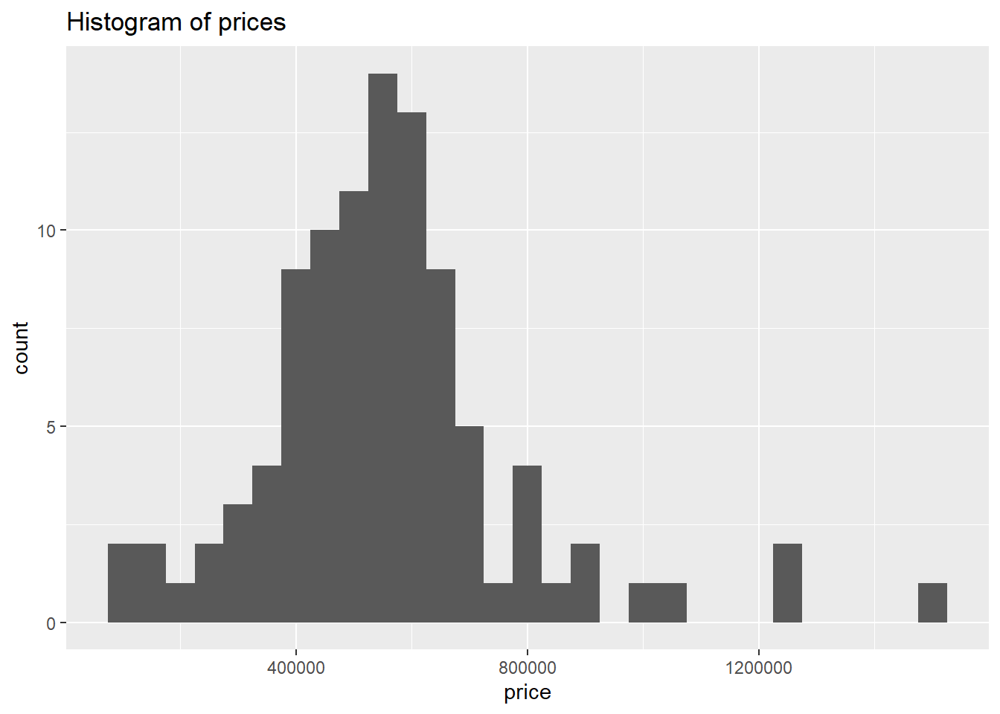

```{r}#| label: load-packageslibrary(tidyverse) # for data wrangling and visualizationlibrary(palmerpenguins) # for datalibrary(openintro) # for datalibrary(knitr) # for tableslibrary(broom) # for model summarylibrary(xfun)library(remotes)```
Hello, Quarto
Meet Quarto
Quarto enables you to weave together content and executable code into a finished document. To learn more about Quarto see https://quarto.org.
Meet the penguins
penguins 資料集
The penguins data from the palmerpenguins package contains size measurements for 344 penguins from three species observed on three islands in the Palmer Archipelago, Antarctica.
The plot below shows the relationship between flipper and bill lengths of these penguins.
Quarto Computations
This dataset contains a subset of the fuel economy data from the EPA. Specifically, we use the mpg dataset from the ggplot2 package.
Figure 1 shows a positive, strong, and linear relationship between the city and highway mileage of these cars.
Code
ggplot(mpg, aes(x = hwy, y = cty, color = cyl)) +geom_point(alpha =0.5, size =2) +scale_color_viridis_c() +theme_minimal()
Figure 1: City and highway mileage for 38 popular models of cars.
There are 234 observations in our data.
The average city mileage of the cars in our data is 16.86 and the average highway mileage is 23.44.
The plots in Figure 2 show the relationship between city and highway mileage for 38 popular models of cars. In Figure 2 (a) the points are colored by the number of cylinders while in Figure 2 (b) the points are colored by engine displacement.
Code
ggplot(mpg, aes(x = hwy, y = cty, color = cyl)) +geom_point(alpha =0.5, size =2) +scale_color_viridis_c() +theme_minimal()ggplot(mpg, aes(x = hwy, y = cty, color = displ)) +geom_point(alpha =0.5, size =2) +scale_color_viridis_c(option ="E") +theme_minimal()
(a) Color by number of cylinders
(b) Color by engine displacement, in liters
Figure 2: City and highway mileage for 38 popular models of cars.
Housing Prices
Introduction
In this analysis, we build a model predicting sale prices of houses based on data on houses that were sold in the Duke Forest neighborhood of Durham, NC around November 2020. Let’s start by loading the packages we’ll use for the analysis.
We present the results of exploratory data analysis in Section 4.2 and the regression model in Section 4.3.
We’re going to do this analysis using literate programming [@knuth1984].
Exploratory data analysis
The data contains 98 houses. As part of the exploratory analysis let’s visualize and summarize the relationship between areas and prices of these houses.
Data visualization
Figure 3 shows two histograms displaying the distributions of price and area individually.
Code
ggplot(duke_forest, aes(x = price)) +geom_histogram(binwidth =50000) +labs(title ="Histogram of prices")ggplot(duke_forest, aes(x = area)) +geom_histogram(binwidth =250) +labs(title ="Histogram of areas")

(a) Histogram of prices
(b) Histogram of areas
Figure 3: Histograms of individual variables
Figure 4 displays the relationship between these two variables in a scatterplot.
Code
ggplot(duke_forest, aes(x = area, y = price)) +geom_point() +labs(title ="Price and area of houses in Duke Forest")
Figure 4: Scatterplot of price vs. area of houses in Duke Forest
Summary statistics
Table 1 displays basic summary statistics for these two variables.
This is an example of a ‘folded’ caution callout that can be expanded by the user. You can use collapse="true" to collapse it by default or collapse="false" to make a collapsible callout that is expanded by default.
Diagrams
Mermaid
Code
flowchart LR A[Hard edge] --> B(Round edge) B --> C{Decision} C --> D[Result one] C --> E[Result two]
flowchart LR
A[Hard edge] --> B(Round edge)
B --> C{Decision}
C --> D[Result one]
C --> E[Result two]
::: {.column-margin}We know from *the first fundamental theorem of calculus* that for $x$ in $[a, b]$:$$\frac{d}{dx}\left( \int_{a}^{x} f(u)\,du\right)=f(x).$$:::
We know from the first fundamental theorem of calculus that for x in [a, b]:
---title: "Hello, Quarto"subtitle: "Quarto 教學"date: "6/13/2023"date-modified: "6/13/2023"date-format: "YYYY-MM-DD"author: "Bennie Liu"abstract: "以官網範例檔案為基礎，介紹如何使用R Quarto"highlight-style: pygmentsformat: html: code-fold: true code-tools: true code-link: true code-line-numbers: true toc: true df-print: paged html-math-method: katex # pdf: # code-line-numbers: true # geometry: # - top=30mm # - left=30mm # docx: defaultexecute: echo: true warning: falseeditor: visual---# 載入套件```{r}#| label: load-packages#| echo: fencedlibrary(tidyverse) # for data wrangling and visualizationlibrary(palmerpenguins) # for datalibrary(openintro) # for datalibrary(knitr) # for tableslibrary(broom) # for model summarylibrary(xfun)library(remotes)```# Hello, Quarto## Meet QuartoQuarto enables you to weave together content and executable code into a finished document. To learn more about Quarto see <https://quarto.org>.## Meet the penguins`penguins` 資料集`r penguins`{style="float:right;" fig-alt="Illustration of three species of Palmer Archipelago penguins: Chinstrap, Gentoo, and Adelie. Artwork by @allison_horst." width="401"}The `penguins` data from the [**palmerpenguins**](https://allisonhorst.github.io/palmerpenguins "palmerpenguins R package") package contains size measurements for `r nrow(penguins)` penguins from three species observed on three islands in the Palmer Archipelago, Antarctica.The plot below shows the relationship between flipper and bill lengths of these penguins.```{r}#| label: plot-penguins#| echo: falseggplot(penguins, aes(x = flipper_length_mm, y = bill_length_mm)) +geom_point(aes(color = species, shape = species)) +scale_color_manual(values =c("darkorange","purple","cyan4")) +labs(title ="Flipper and bill length",subtitle ="Dimensions for penguins at Palmer Station LTER",x ="Flipper length (mm)", y ="Bill length (mm)",color ="Penguin species", shape ="Penguin species" ) +theme_minimal()```# Quarto ComputationsThis dataset contains a subset of the fuel economy data from the EPA. Specifically, we use the `mpg` dataset from the **ggplot2** package.@fig-scatterplot shows a positive, strong, and linear relationship between the city and highway mileage of these cars.```{r}#| label: fig-scatterplot#| fig-cap: "City and highway mileage for 38 popular models of cars."#| fig-alt: "Scatterplot of city vs. highway mileage for cars, where points are colored by the number of cylinders. The plot displays a positive, linear, and strong relationship between city and highway mileage, and mileage increases as the number of cylinders decreases."#| fig-width: 6#| fig-height: 3ggplot(mpg, aes(x = hwy, y = cty, color = cyl)) +geom_point(alpha =0.5, size =2) +scale_color_viridis_c() +theme_minimal()```There are `r nrow(mpg)` observations in our data.```{r}#| echo: falsemean_cty <-round(mean(mpg$cty), 2)mean_hwy <-round(mean(mpg$hwy), 2)```The average city mileage of the cars in our data is `r mean_cty` and the average highway mileage is `r mean_hwy`.The plots in @fig-mpg show the relationship between city and highway mileage for 38 popular models of cars. In @fig-mpg-1 the points are colored by the number of cylinders while in @fig-mpg-2 the points are colored by engine displacement.```{r}#| label: fig-mpg#| fig-cap: "City and highway mileage for 38 popular models of cars."#| fig-subcap:#| - "Color by number of cylinders"#| - "Color by engine displacement, in liters"#| layout-ncol: 2#| column: page#| cache: trueggplot(mpg, aes(x = hwy, y = cty, color = cyl)) +geom_point(alpha =0.5, size =2) +scale_color_viridis_c() +theme_minimal()ggplot(mpg, aes(x = hwy, y = cty, color = displ)) +geom_point(alpha =0.5, size =2) +scale_color_viridis_c(option ="E") +theme_minimal()```# Housing Prices## IntroductionIn this analysis, we build a model predicting sale prices of houses based on data on houses that were sold in the Duke Forest neighborhood of Durham, NC around November 2020. Let's start by loading the packages we'll use for the analysis.We present the results of exploratory data analysis in @sec-eda and the regression model in @sec-model.We're going to do this analysis using literate programming [@knuth1984].## Exploratory data analysis {#sec-eda}The data contains `r nrow(duke_forest)` houses. As part of the exploratory analysis let's visualize and summarize the relationship between areas and prices of these houses.### Data visualization@fig-histogram shows two histograms displaying the distributions of `price` and `area` individually.```{r}#| label: fig-histogram#| fig-cap: "Histograms of individual variables"#| fig-subcap:#| - "Histogram of `price`s"#| - "Histogram of `area`s" #| layout-ncol: 2#| column: page-rightggplot(duke_forest, aes(x = price)) +geom_histogram(binwidth =50000) +labs(title ="Histogram of prices")ggplot(duke_forest, aes(x = area)) +geom_histogram(binwidth =250) +labs(title ="Histogram of areas")```@fig-scatterplot-HP displays the relationship between these two variables in a scatterplot.```{r}#| label: fig-scatterplot-HP#| fig-cap: "Scatterplot of price vs. area of houses in Duke Forest"ggplot(duke_forest, aes(x = area, y = price)) +geom_point() +labs(title ="Price and area of houses in Duke Forest")```### Summary statistics@tbl-stats displays basic summary statistics for these two variables.```{r}#| label: tbl-stats#| tbl-cap: "Summary statistics for price and area of houses in Duke Forest"duke_forest %>%summarise(`Median price`=median(price),`IQR price`=IQR(price),`Median area`=median(area),`IQR area`=IQR(area),`Correlation, r`=cor(price, area) ) %>%kable(digits =c(0, 0, 0, 0, 2))```## Modeling {#sec-model}We can fit a simple linear regression model of the form shown in @eq-slr.$$price = \hat{\beta}_0 + \hat{\beta}_1 \times area + \epsilon$$ {#eq-slr}@tbl-lm shows the regression output for this model.```{r}#| label: tbl-lm#| tbl-cap: "Linear regression model for predicting price from area"price_fit <-lm(price ~ area, data = duke_forest)price_fit %>%tidy() %>%kable(digits =c(0, 0, 2, 2, 2))```::: callout-noteThis is a pretty incomplete analysis, but hopefully the document provides a good overview of some of the authoring features of Quarto!:::## References {.unnumbered}# Equations## 行內方程式常態分佈機率密度函數：$f(x)=\dfrac{1}{\sigma\sqrt{2\pi}}e\^{-\frac{(x-\mu)^2}{2\sigma^2}}$## 單行方程式$$f(x)=\dfrac{1}{\sigma\sqrt{2\pi}}e^{-\frac{(x-\mu)^2}{2\sigma^2}}$$ {#eq-normaldistribution}# Callout樣式::: callout-note## notenote:::::: {.callout-note appearance="simple" icon="true"}note simple with icon:::::: callout-tiptip:::::: callout-importantimportant:::::: callout-cautioncaution:::::: callout-warningwarning:::::: {.callout-caution collapse="true"}## Expand To Learn About CollapseThis is an example of a 'folded' caution callout that can be expanded by the user. You can use `collapse="true"` to collapse it by default or `collapse="false"` to make a collapsible callout that is expanded by default.:::# Diagrams## Mermaid```{mermaid}%%| label: fig-Mermaid-simple%%| fig-cap: a flowchart created using Mermaidflowchart LR A[Hard edge] --> B(Round edge) B --> C{Decision} C --> D[Result one] C --> E[Result two]```## Graphviz```{dot}//| label: fig-Graphviz-simple//| fig-cap: "This is a simple graphviz graph."graph G { layout=neato run -- intr; intr -- runbl; runbl -- run; run -- kernel; kernel -- zombie; kernel -- sleep; kernel -- runmem;sleep -- swap; swap -- runswap; runswap -- new; runswap -- runmem; new -- runmem;sleep -- runmem;}```# Video{{< video https://www.youtube.com/embed/wo9vZccmqwc >}}# Code Annotation``` rlibrary(tidyverse)library(palmerpenguins)penguins |># <1>mutate( # <2>bill_ratio = bill_depth_mm / bill_length_mm, # <2>bill_area = bill_depth_mm * bill_length_mm # <2> ) # <2>```1. Take `penguins`, and then,2. add new columns for the bill ratio and bill area.# Article Layout## Screen Column```{r}#| column: screen# library(leaflet)# leaflet() %>%# addTiles() %>% # Add default OpenStreetMap map tiles# addMarkers(lng=174.768, lat=-36.852, popup="The birthplace of R")```## Margin Content``` markdown::: {.column-margin}We know from *the first fundamental theorem of calculus* that for $x$ in $[a, b]$:$$\frac{d}{dx}\left( \int_{a}^{x} f(u)\,du\right)=f(x).$$:::```::: column-marginWe know from *the first fundamental theorem of calculus* that for $x$ in $[a, b]$:$$\frac{d}{dx}\left( \int_{a}^{x} f(u)\,du\right)=f(x).$$:::# SQL CODE``` sqlSELECT*FROM DUAL```